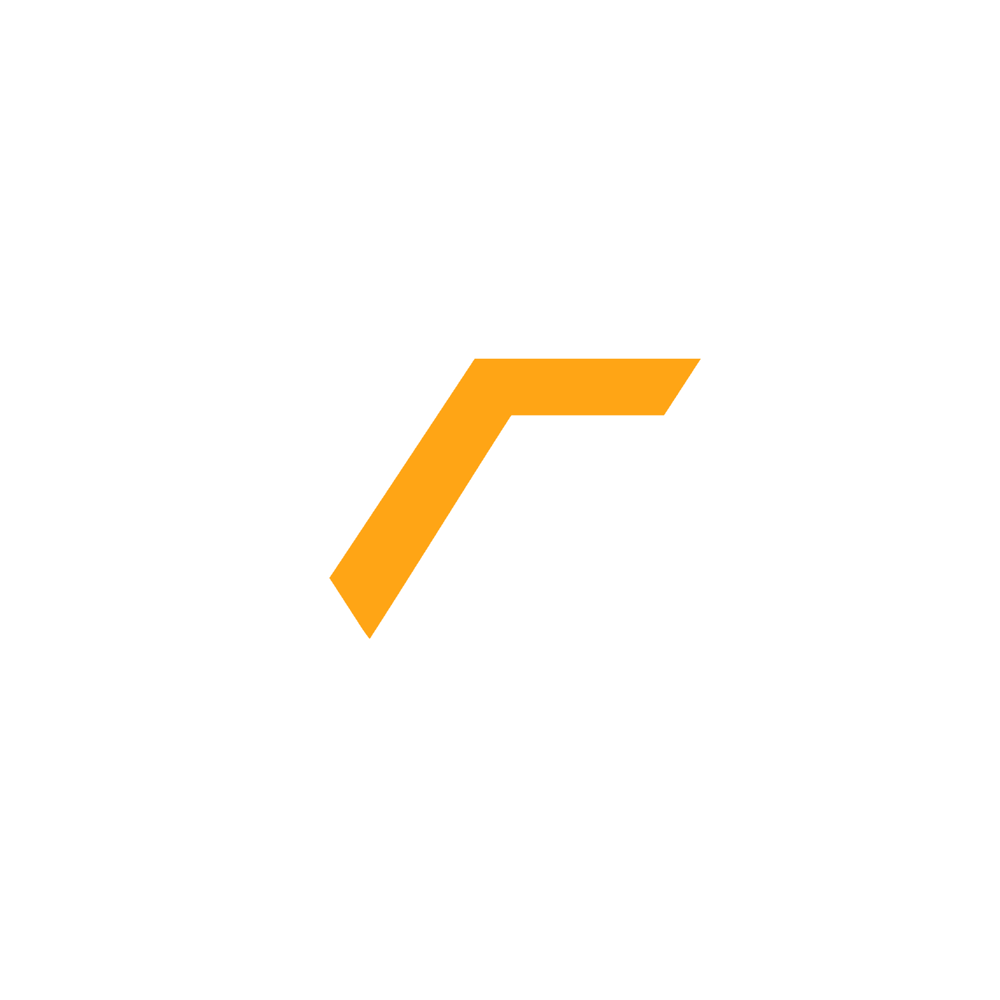

YouTube Channels
Subscribe and catch up on the latest from every FantasyNow+ show

FantasyNow+
Our flagship channel — rankings, waiver targets, start/sit calls and weekly recaps across the whole fantasy landscape.
- Weekly rankings, waiver wire and start/sit breakdowns
- Live shows with the full analyst team
- New videos added throughout the week

Dynasty+
Dedicated coverage for dynasty and keeper leagues — rookie evaluations, trade value and long-term roster building.
- Rookie rankings and prospect breakdowns
- Dynasty trade value discussion
- Startup and rebuild strategy
Get Tilted
The lighter side of fantasy — hot takes, bold predictions and the moments that make you want to flip your desk.
- Bold predictions and reaction content
- Weekly rants and hot takes
- Behind-the-scenes and community clips